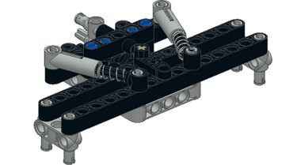
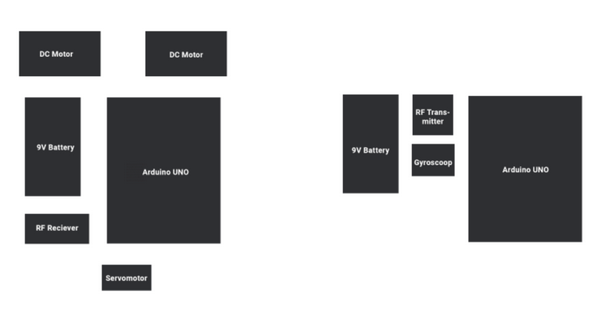
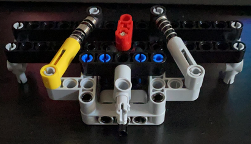
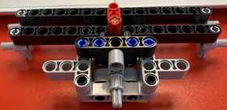
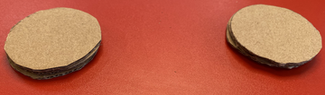
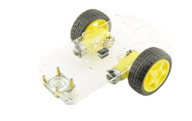

Monday June 7th, 2021
Today we started the labweeks with a general and topic kick-off. After these kick-offs, we jumped in a new call to start our project.
We began by making a plan for this first week and then started our brainstorm. During this brainstorm we came up with multiple ideas, however we eventually decided on one idea that could possibly develop into another idea.


After tinkering with the different sensors from our Arduino-kits, we decided to make a schematic view of both the car and the controller. This schematic view, as seen below, shows which sensors and pieces of technology go where.
Tuesday June 8th, 2021
After the daily kick-off we researched different sensors for the Arduino, which we do not own yet. We also looked into possibilities to create a so-called ‘return to center’ steering mechanism out of lego pieces. We have found multiple sources that give instructions on how to build a mechanism like that.

After some deliberation and feedback from our lecturer, we’ve decided to make a glove that controls the car instead of an actual joystick-type controller. This way we are able to connect our concept to the specific topic we were assigned to.
Throughout the afternoon we discussed which components on the schematic view of the car can be left out. Also we looked at a prototype glove, which gives us a rough outline of the type of glove and technology on this glove.
Lastly, we measured and decided which lego pieces we needed to order for our car’s chassis. On top of this we were able to find a gyroscope, which we tested. The code to make the gyro work needs some tweaking still. However, we were able to make it work with lights turning on when moved forward, backward, left and right.
Wednesday June 9th, 2021
Today we mostly tinkered with the sensitiveness of our gyroscope. We were able to configure the gyro in such a way that, when under a certain angle, two lights light up. In translation to the car and remote, this will mean that you can accelerate and steer right at the same time.
Furthermore, we have changed some values in our code to change the sensitiveness of the gyro. The movement will now be registered when it reaches above a certain value. This way the car won’t be shaking when standing still.
After lots of tinkering with the values, we were able to fix the shaking issue and have the servometer fully working and ready for the steering mechanism. We also were able to order the motors, antennas and extra batteries for the project. Now we have to wait until everything arrives, so we can continue.

Thursday June 10th, 2021
As we were still waiting on our orders to arrive, we decided to map out our entire wiring system. This way we can have a schematic overview of the final wiring for both the car and the glove.

During the afternoon the ordered Lego parts arrived and we were able to build the front steering mechanism as seen below.

Friday June 11th, 2021
During the course of yesterday afternoon, more parts were delivered. However, we quickly figured out we were missing some minor pieces to connect things together. We decided to schedule a physical meeting at the campus to attempt connecting the separate parts together, so we know if it works the way we want it to.
Upon first look and manual try of the front steering mechanism, we noticed that the servomotor we want to connect to it wouldn’ t be able to turn the wheels left to right. We quickly noticed that the element causing this were the pneumatic arms up top. Since the store we ordered them from only had one grey one. The other one we ordered was set too tight and for the biggest part prevented smooth steering. We eventually decided to take these pneumatic arms off and just leave the rest the way it was.

Upon further investigation, we noticed that the lego wheels we are going to use in the front have a way too big axis to be connected to the small motors we have. Therefore, we decided to cut out cardboard circles to use as wheels for the back. These are easier to put on the axis of the motors.

Furthermore we recreated both of the separate Arduino circuits in an attempt to connect them via antenna. This only worked partially, so we decided to break everything down and connect everything step by step.
Monday June 14th, 2021
Today we continued working on getting the different sensors working. As of now the motors and antennas work. We are still working on getting the transmitter and receiver working as they should.
After asking an acquaintance with extensive knowledge on Arduino for help. We were able to get a little bit further. Before we were only able to send one value and now we are able to send three at a time.
The receiver and transmitter still aren’t working as they should, but we are two steps closer.
Tuesday June 15th, 2021
Today is going to consist of more tinkering with the transmitter and receiver. Also we are going to write out and make the first draft of our presentation for the expo on Friday.
As for the presentation, we decided to split it up in three sections. The first section will talk about our process over these past two weeks and will segway into the second section where we will show our video on how the car works. Finally in section three, we will talk about what we think the contribution of our car is to the world.
After this we decided to split up, with one making the powerpoint and one continuing to tinker around with the Arduino. For the presenting portion, we have decided that one of us will fully voice over the presentation, since they can’t be there for the expo.
After tinkering around and planning out the final days, we decided to order one last part. We ordered a ready-made car that we can hook up the Arduino to. The car we ordered can be seen below.

Wednesday June 16th, 2021
Today the car will be delivered, so we will start assembly immediately once we have it. The final tweaks to the code will be made. Also we will start assembly on the glove.
The car has been assembled and the final problem was found. Apparently it was a power supply problem. We also have assembled the glove. Both of the devices work separately and together as one.